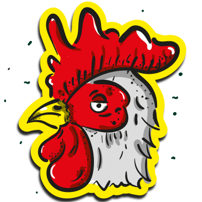
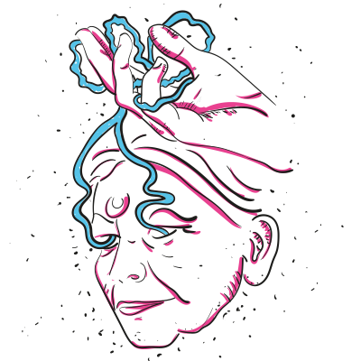
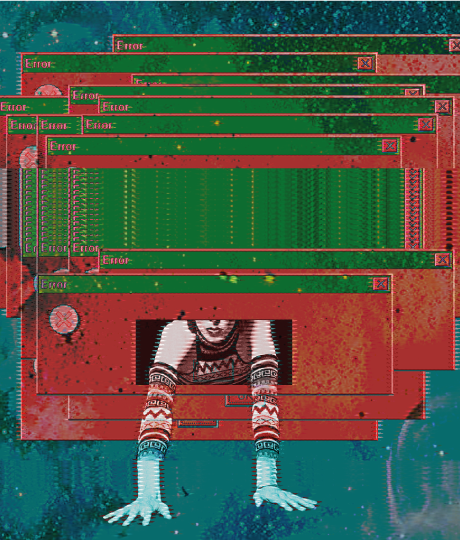
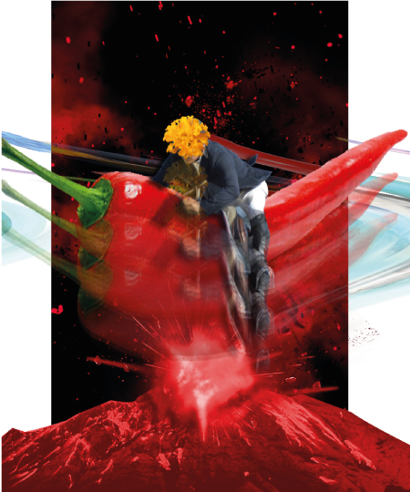
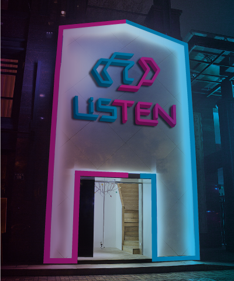
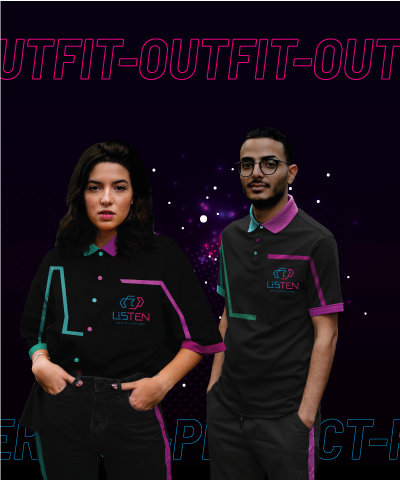

Estas son algunas de mis ilustraciones favoritas, en las cuales se puede observar el uso de líneas sueltas, pocos colores pero con muchos tonos intermedios que hacen a los dibujos más dinámicos.
 El collage digital es una técnica que me gusta mucho, ya que permite jugar con proporciones que se alejan de la realidad, crear nuevos mundos y mezclar diferentes universos visuales.
 Aquí presento uno de los últimos trabajos realizados en mi etapa de estudiante, el cual se trataba de crear la identidad visual para un cliente ficticio “Listen- Bar Silencioso”.
 